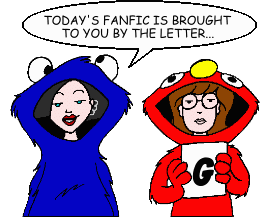
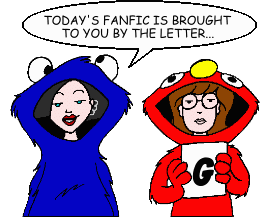

Fan Fiction
"G" by Title

Fan Fiction
"G" by Title

|
Authors: If you no longer wish for any of your stories to be posted, please send e-mail to fanfic@lawndale.net and I will remove them at once. |
| Gala By Lauren Category: Miscellaneous Jane and Trent get a new neighbor, Gala. |
| Game Theory By Thomas Mikkelsen Category: Miscellaneous A series of events leads Daria to ponder her attitude towards her life. |
| The Garbage Men and Their Muse By Brother Grimace Category: Miscellaneous A Helen-centric fanfic, from a very unusual point of view. |
| Gay Blade By Anonymous Category: Miscellaneous Daria's gay cousin Kylie comes for a visit. |
| The Gem and the Sword (*) By Ranger Thorne Category: Crossovers & Parodies In this crossover with the animated "Teen TItans," Daria learns that prophecy can come true and that her origins are tied to those of a Goth hero named Raven. |
| Geneological Exam By J Osako Category: School Situations Today's assignment: "an oral presentation on your family tree." Little does Mr. O'Neill know what surprises lurk in Morgendorffer family's past. |
| Generation Gap By Richard Lobinske Category: Alternate History Soon after Daria's high school graduation, Helen and Jake tell her about Anastasia, who was born when Helen was 16... and is actually Daria's real mother! The mysteries behind her death lead Daria to join the FBI and search for what really happened. A response to Prince Charon's "Helen as Daria's grandmother" challenge on the PPMB. |
| Genius or Clay Poisoning?: Q&A with Jane Lane By CalTrec10 Category: Past & Future Candid interview with a future Jane. |
| Genuine Imitation By Stephanie Category: School Situations Daria is forced to be in a school play in which she has to portray her teachers. |
| Get On Top: Sandra Griffin's Autobiography (*) By MJ Brault Category: Miscellaneous The life of Sandi Griffin, in her own words. |
| A Get Well Gift By Overlord Mikey-kun Category: Past & Future Lindy wakes up in the hospital two weeks after an accident to find her friend Quinn by her side. But why can't she remember what happened? |
| Getting On With Living By Brother Grimace Category: Miscellaneous A Iron Chef themed fic dealing with Jane and her feelings about her relationship with Young Master Thomas. |
| Ghosts of Christmas Future By Crusading_Saint Category: Past & Future Fifteen years in the future, the lives of some former residents of Lawndale come together at Christmastime. |
| Gimme Skelter (*) By The Angst Guy and Brother Grimace Category: Alternate History In another time and place, college freshmen Helen Barksdale and Jake Morgendorffer help make a young man's dream come true. Unfortunately, the young man is a psychotic cult leader named Charles Manson. The dream that comes true is the apocalyptic nightmare called "Helter Skelter." Note: This story includes content (language, violence, or sexual situations) that may not be appropriate for some readers. |
| Gimme the Prize By Richard Lobinske Category: Crossovers & Parodies A "Highlander" crossover written for the "March Madness" challenge at PPMB. Anthony DeMartino meets the only other remaining Immortal for the final battle for the Prize. |
| A Girl and Her Guitar By Wouter Jaegers Category: Miscellaneous When Daria finds Trent's guitar that he left behind (after "Lane Miserables"), she attempts to return it to him. But when he says that she can keep it, Daria decides to become musical, much to Quinn's chagrin. |
| Girl Uninterrupted By Thomas Mikkelsen and Medea42 Category: Miscellaneous A rather nasty secret is revealed on Daria's 18th birthday. |
| The Girl Who Walked Home All Alone in the Dark (*) By The Angst Guy Category: Miscellaneous Jane Lane tells a slightly twisted bedtime story to the Gupty kids (a "Legends of the Mall" tale). |
| Girls Together Sarcasticaly By Dennis Category: Series & Multi-Part Stories (Past & Future) Daria's in Boston and in a band with some familiar faces, some expected and some surprising. |
| Giving a Damn By Medea42 Category: Miscellaneous Quinn persuades Daria to see "Gone With the Wind" with her. |
| The Glory of Lawndale High By Dave Hines Category: School Situations A new student shows up at Lawndale High, but he's not the same as the other students. How will Daria and company deal with a bully, especially when people in high places are protecting him? |
| Go Folk Yourself By Bryan McGucken Category: Miscellaneous Set one year after the events of "A Kiss for Quinn," Stacy Rowe discovers a new talent, and the author helps her explore it. However, trouble ensues when Ms. Li forbids her from displaying her talent at the mandatory Lawndale High Talent Expo. How will Stacy and the rest of the crew handle things? |
| God Save the Esteem By Charles RB Category: Series & Multi-Part Stories (Alternate History) October 2010, and the hardcore punk Morgendorffers are descending on Lawndale: Hellion, Jake the Snake, Killer Quinn, and... Daria, the one who refuses to rebel properly. Can an armor of sarcasm get Daria through headbutt-filled family life and Lawndale High School? Heck no! |
| Gone (*) By The Angst Guy Category: Alternate History The Cuban Missile Crisis boils over in October 1962, and the lives of three young sisters change forever. Helen, Rita, and Amy Barksdale star in this tale of sibling bonds tested under the worst of worst-case scenarios. |
| Gone With the Whine [Artwork] By John Berry Category: Miscellaneous Jodie's little sister, Rachel, has had enough of being ignored, so she runs away. Meanwhile, Helen's assistant, Marianne, also departs... on a vacation. |
| Good Deed for the Day By Brother Grimace Category: Miscellaneous Another Iron Chef, this one about how Sandi spends an afternoon. |
| Good Intentions By E.A. Smith Category: Miscellaneous Daria finds more than she bargained for when she attends a writer's workshop with Mr. O'Neill, with a member of the Fashion Club getting caught in the middle. |
| Goodbye Lawndale By Caitlin Duffy Category: School Situations The final epic of Daria and Jane and their last days at Lawndale High. (Written before the series finale and "Is It College Yet?") |
| Goodbye, Jake By Mitch Category: Miscellaneous Helen kicks Jake out. |
| The Graduation Gift By Di Category: Past & Future Jane receives a special gift for her college graduation. |
| The Great Lawndale Earthquake By Mitch Category: Romance The "last" Daria story, with danger, disaster, unlikly loves, and new beginnings. |
| The Great Pretenders By Grey Bard Category: Miscellaneous When Jane is in danger, Daria will go to extremes to save her. |
| The Greatest Gift By Di Category: Past & Future A five-year-old Daria receives a special Christmas present from her favorite aunt. |
| The Green Eyed Daria By CAT3508 Category: Romance Daria becomes jealous of the new girl in school. |
| Greenpieces By Kathrine Ritchie Category: School Situations Lawndale High saves the planet... um, well, not really. |
| The Griffin Variations By Dennis Category: Series & Multi-Part Stories (Miscellaneous) A series of unrelated ficlets focusing on Sandi Griffin, her family, and the relationships among them and the rest of Lawndale. |
| Griffin's Flight By Crusading_Saint Category: Past & Future After "Is It College Yet?", Sandi Griffin tries to put her life back together. Some people don't want things to go back to how they were, however... |
| Guardian By Mike Yamiolkoski Category: Sci-Fi, Fantasy & Horror Being a Guardian Angel for the Morgendorffers: it's a tough job, but somebody's gotta do it. |
| Guilty Pleasures By Angelinhel Category: Miscellaneous A PPMB "Iron Chef" challenge ficlet, in which one or more Lawndale characters are shown secretly indulging in a "guilty pleasure" (and being very out of character doing it). |
| Guilty Pleasures By Erin Mills Category: Miscellaneous Ever wonder what some of our favorite Lawndale teens do when they think no one's looking? Here's your chance to find out. |
| Gunshot By Shea Category: School Situations A teacher flipping out... a student sidekick... find out what would happen to Lawndale High if the Columbine High School shooting took an effect on the people of Lawndale, and how they would react to it. |
| The Gupty Kids Turn Bad By Nada Rowls Category: Miscellaneous Daria is stuck babysitting Tad and Tricia Gupty while Jake and Helen are in Hawaii. With Quinn on a date and Jane by her side, however, Daria starts to think it won't be so bad after all... |
| Guys' Night Out (*) By The Angst Guy Category: Miscellaneous Three young men search time and space for true love--or the next best thing. Note: This story includes content (language, violence, or sexual situations) that may not be appropriate for some readers. |